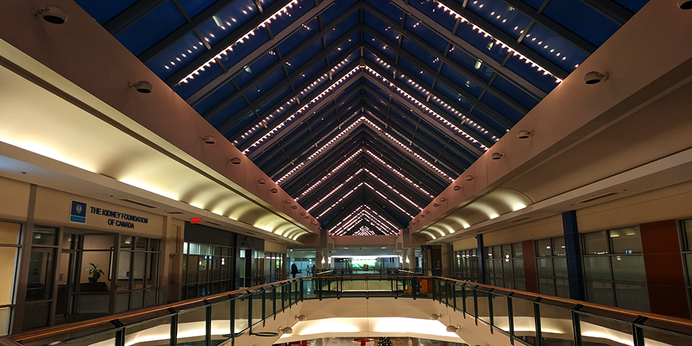
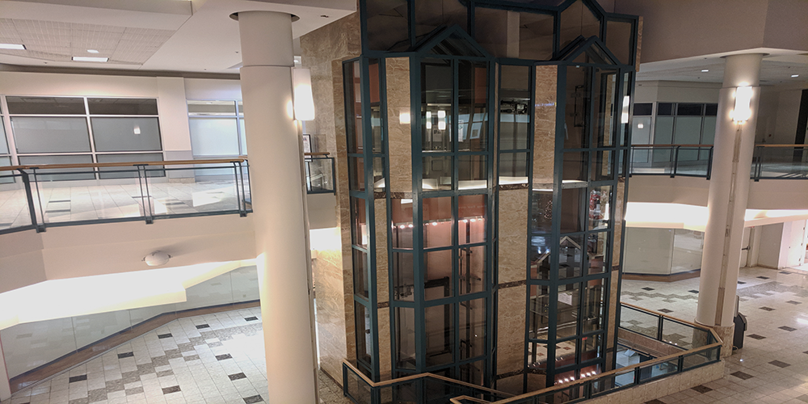

Westmount Mall
Image1
Summary
Opened in 1971, Westmount Shopping Center is located in west London. This Mall is quite sizable and is located in a very busy area surrounded by several other businesses such as the Cineplex Odeon Westmount movie theater, Superking SuperMarket and a Fitness 4 Less. This mall has one large anchor being an Urban Planet. Despite the size of the mall there is a very small selection of stores and only one food vendor in the cafeteria(Tim Hortons). Much of the space being used is occupied by clinics.
See: https://westmountshoppingcentre.com/
Image2
Is it Dead?
Westmount Shopping Center is the definition of a dead mall. The stark contrast between its size and its amount of business is enough to give it away within seconds of entering the mall. It would seem that the owners of the mall are attempting to fill its vacant locations with professionals such as medical centers and offices. This is a common trend among these malls and it doesn't seem to be working for Westmount. The vast majority of the stores remain vacant and the halls of this building are silent and bare.